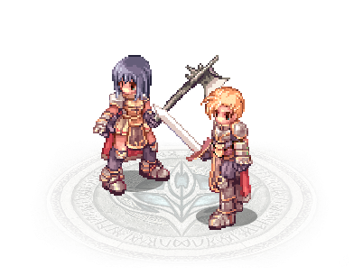
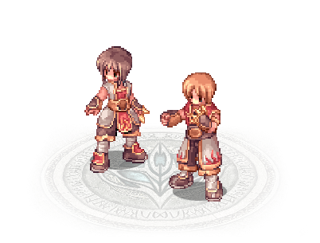
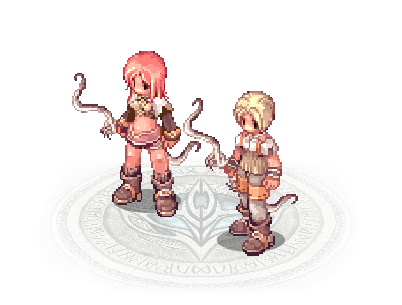
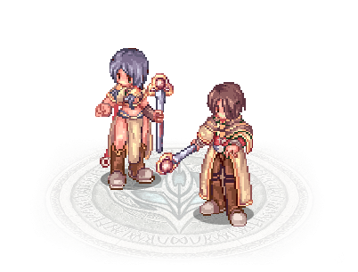
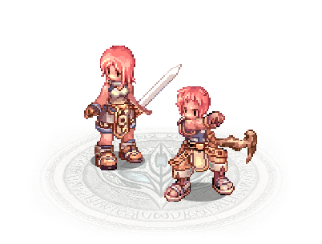
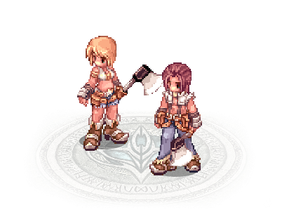
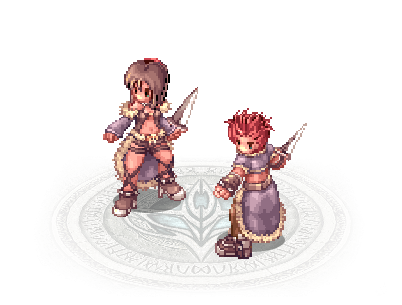
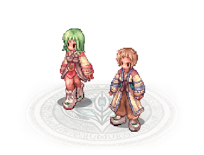
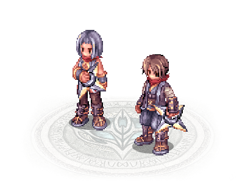
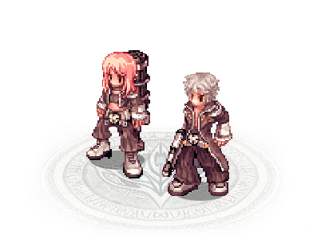

-
Lorde #001
- Transclasse 2-1
Os lordes se curvam diante da supremacia dos Lordes. Capazes de atingir valores superiores a 20000 HP, eles são a força de invasão e ocupação definitiva. Seja servindo de escudo humano, seja causando danos altíssimos com seu Perfurar em Espiral, você será temido nos campos de batalha.
-
Shura #002
- Classe 3-2
De corpo e mente treinados, os Shuras são guerreiros das artes marciais. Seus poderes físicos ultrapassam os limites humanos, permitindo rápidos combos e a conjuração de esferas espirituais para diversos fins.
-
Caçador #003
- Classe 2-1
Caçadores são grandes conhecedores dos animais, a ponto de serem capazes de domesticar um Falcão para ajudá-los nas batalhas.
-
Sábio #004
- Classe 2-2
Sabendo que há mais para aprender com a magia do que explodir monstros com feitiços e correr quando o SP acabar, os Magos buscam o caminho dos estudos alternativos e do profundo conhecimento elemental para se tornarem Sábios.
-
Supe Aprendiz #005
- Classe 2
Enquanto alguns jogadores optam por evoluir constantemente seus personagens, almejando alcançar as classes 2-1 e 2-2, outros se recusam a desistir de sua inocência. Como um Super Aprendiz, você pode treinar até atingir o nível de classe 70, e aprender a maioria das habilidades da primeira classe.
-
Ferreiro #006
- Transclasse 2-1
Quando você atinge um entendimento imenso da arte de moldar o metal, o aço se torna uma coisa viva, maleável... e extremamente poderosa. Esse conhecimento corre em suas veias, e você pode usá-lo para criar a arma perfeita ou para destruí-las com um só golpe. Você é o senhor de todas as armas. E ninguém pode detê-lo!
-
Desordeiro #007
- Transclasse 2-2
Viver entre quatro paredes, seguindo ordens e vestindo uniformes? Isso é besteira. Liberdade é o que rege a vida. E é nisso que os Desordeiros se especializaram: liberdade. Se eles não quiserem, você não poderá nem feri-los. Pois você logo estará sem equipamento nenhum. E você nem perceberá quem removeu.
-
Esperitualista #008
- Classe Expandida 2
Diferentemente dos Mestres Taekwons, que optam por alinhar seu espírito com o mundo para despertar sua força interior, os Espiritualistas focam seus estudos na compreensão da alma e na invocação de espíritos ancestrais. Eles são magos capazes de invocar espíritos de poderosos guerreiros ancestrais e incorporá-los em si ou em seus companheiros.
-
Ninja #009
- Classe Expandida 1
Baseados nos guerreiros das sombras do Japão Feudal, os Ninjas são habitantes da escuridão e adeptos às artes de atacar sem serem vistos. Eles utilizam sua rapidez e versatilidade como principal arma.
-
Justiceiro #010
- Classe Expandida 1
Os Justiceiros são os heróis do velho oeste que ganharam esta reputação por serem muito talentosos com armas de fogo. Esta é a classe mais diferente de toda a história de Ragnarok Online. Os Justiceiros são os únicos que podem usar revólveres, espingardas e rifles, e suas builds são desenvolvidas de acordo com as armas que usam.